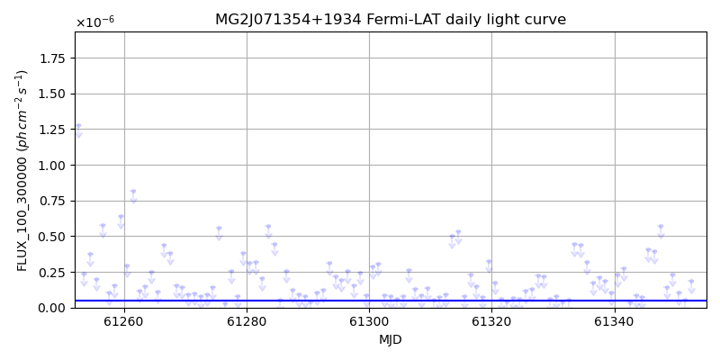
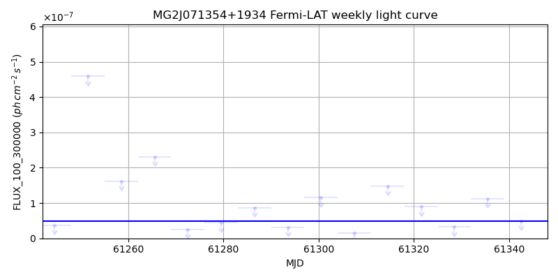
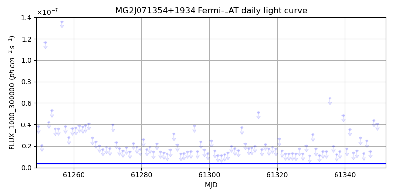
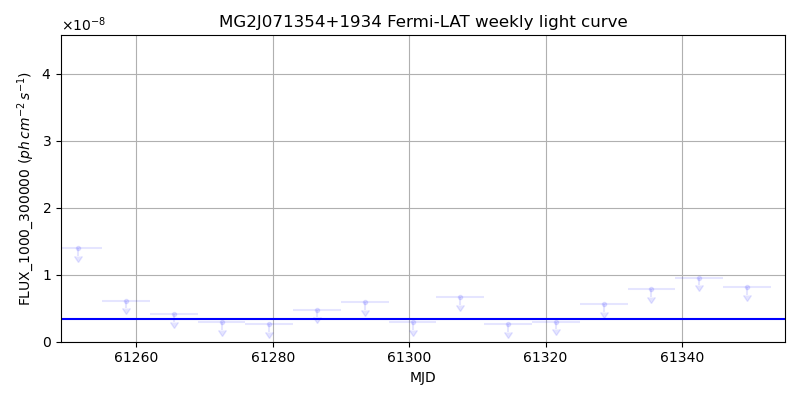

LAT Lightcurve site: https://fermi.gsfc.nasa.gov/ssc/data/access/lat/msl_lc/source/MG2_J071354p1934
NED: Query
Time of last update of this page: UT: 2026-11-13 16:18 (MJD: 61357.679)
| Property | Value |
|---|---|
| R.A. | 7:13:55.68 |
| Dec. | 19:34:58.8 |
| z | 0.540 |
| 3FGL SpectrumType | LogParabola |
| 3FGL PL Index | |
| 3FGL Flux_100_300000 | 4.96e-08 1 / (s cm2) |
| 3FGL Flux_1000_300000 | 3.41e-09 1 / (s cm2) |
| 3FGL Flux >200 GeV | 8.62e-13 1 / (s cm2) |
| 3FGL Extrap. Crab >200 GeV | 0.00 |
| 3FGL Flux After EBL Absorption >200GeV | 1.34e-13 1 / (s cm2) |
| 3FGL EBL Crab Fraction >200GeV | 0.00 |

| MJD | dMJD | Flux | dFlux | Frac3FGL | FracCrab>200GeV | EBLFracCrab>200GeV |
|---|---|---|---|---|---|---|
| 61348.50 | 0.50 | 1.46e-07 | 0.00e+00 | 0.00 | 0.00 | 0.00 |
| 61349.50 | 0.50 | 2.33e-07 | 0.00e+00 | 0.00 | 0.00 | 0.00 |
| 61350.50 | 0.50 | 1.03e-07 | 0.00e+00 | 0.00 | 0.00 | 0.00 |
| 61351.50 | 0.50 | 5.48e-08 | 0.00e+00 | 0.00 | 0.00 | 0.00 |
| 61352.50 | 0.50 | 1.86e-07 | 0.00e+00 | 0.00 | 0.00 | 0.00 |

| MJD | dMJD | Flux | dFlux | Frac3FGL | FracCrab>200GeV | EBLFracCrab>200GeV |
|---|---|---|---|---|---|---|
| 61321.50 | 3.50 | 8.94e-08 | 0.00e+00 | 0.00 | 0.00 | 0.00 |
| 61328.50 | 3.50 | 3.22e-08 | 0.00e+00 | 0.00 | 0.00 | 0.00 |
| 61335.50 | 3.50 | 1.13e-07 | 0.00e+00 | 0.00 | 0.00 | 0.00 |
| 61342.50 | 3.50 | 4.92e-08 | 0.00e+00 | 0.00 | 0.00 | 0.00 |
| 61349.50 | 3.50 | 1.68e-07 | 0.00e+00 | 0.00 | 0.00 | 0.00 |

| MJD | dMJD | Flux | dFlux | Frac3FGL | FracCrab>200GeV | EBLFracCrab>200GeV |
|---|---|---|---|---|---|---|
| 61348.50 | 0.50 | 4.40e-08 | 0.00e+00 | 0.00 | 0.00 | 0.00 |
| 61349.50 | 0.50 | 4.07e-08 | 0.00e+00 | 0.00 | 0.00 | 0.00 |
| 61350.50 | 0.50 | -1.00e+00 | 0.00e+00 | 0.00 | 0.00 | 0.00 |
| 61351.50 | 0.50 | 1.37e-08 | 0.00e+00 | 0.00 | 0.00 | 0.00 |
| 61352.50 | 0.50 | 4.17e-08 | 0.00e+00 | 0.00 | 0.00 | 0.00 |

| MJD | dMJD | Flux | dFlux | Frac3FGL | FracCrab>200GeV | EBLFracCrab>200GeV |
|---|---|---|---|---|---|---|
| 61321.50 | 3.50 | 3.01e-09 | 0.00e+00 | 0.00 | 0.00 | 0.00 |
| 61328.50 | 3.50 | 5.62e-09 | 0.00e+00 | 0.00 | 0.00 | 0.00 |
| 61335.50 | 3.50 | 7.86e-09 | 0.00e+00 | 0.00 | 0.00 | 0.00 |
| 61342.50 | 3.50 | 9.56e-09 | 0.00e+00 | 0.00 | 0.00 | 0.00 |
| 61349.50 | 3.50 | 8.15e-09 | 0.00e+00 | 0.00 | 0.00 | 0.00 |
--------------------------------------------------------- Using user-supplied coords: 7:13:55.68 19:34:58.8 2000 --------------------------------------------------------- FLWO UT night of: 2026-11-14 Local Sid. @ Midnight: 03:09 Sunset (-15.0) (local, UT): 18:35 01:35 Sunrise (-15.0) (local, UT): 05:42 12:42 Moonrise (local, UT): Moonset (local, UT): 20:50 03:50 Moon phase: 0.22 --------------------------------------------------------- AzTime LSID UT Obj_el Obj_az Mn_el Mn_az Sep. --------------------------------------------------------- 18:35 21:44 01:35 -27.6 39.9 20.1 218.2 172.2 19:05 22:14 02:05 -23.3 46.1 16.0 223.7 172.4 19:35 22:44 02:35 -18.4 51.7 11.6 228.6 172.5 20:05 23:14 03:05 -13.3 56.7 6.9 233.2 172.7 20:35 23:44 03:35 -7.8 61.3 2.0 237.3 172.8 21:05 00:14 04:05 -1.1 65.5 -2.2 241.2 173.0 21:35 00:44 04:35 4.1 69.4 -9.0 244.8 173.1 22:05 01:14 05:05 10.0 73.1 -14.6 248.2 173.3 22:35 01:44 05:35 16.2 76.7 -20.4 251.4 173.4 23:05 02:14 06:05 22.4 80.2 -26.2 254.5 173.6 23:35 02:44 06:35 28.7 83.7 -32.1 257.5 173.7 00:05 03:14 07:05 35.1 87.3 -38.1 260.6 173.8 00:35 03:45 07:35 41.5 91.2 -44.2 263.8 173.9 01:05 04:15 08:05 47.9 95.5 -50.2 267.1 174.0 01:35 04:45 08:35 54.2 100.6 -56.3 270.9 174.1 02:05 05:15 09:05 60.4 106.9 -62.4 275.3 174.1 02:35 05:45 09:35 66.4 115.5 -68.4 281.1 174.1 03:05 06:15 10:05 71.9 128.4 -74.2 289.9 174.1 03:35 06:45 10:35 76.1 149.1 -79.6 306.2 174.1 04:05 07:15 11:05 77.9 180.1 -83.2 343.5 174.1 04:35 07:45 11:35 76.1 211.0 -82.1 35.1 174.0 05:05 08:15 12:05 71.8 231.7 -77.4 61.2 173.9 05:35 08:45 12:35 66.4 244.5 -71.8 73.4 173.8 05:42 08:52 12:42 65.1 246.6 -70.5 75.2 173.7 --------------------------------------------------------- Dark hours >55 deg.: 4.05 srcstart (UT): 2026-11-14 08:38 srcend (UT): 2026-11-14 12:41